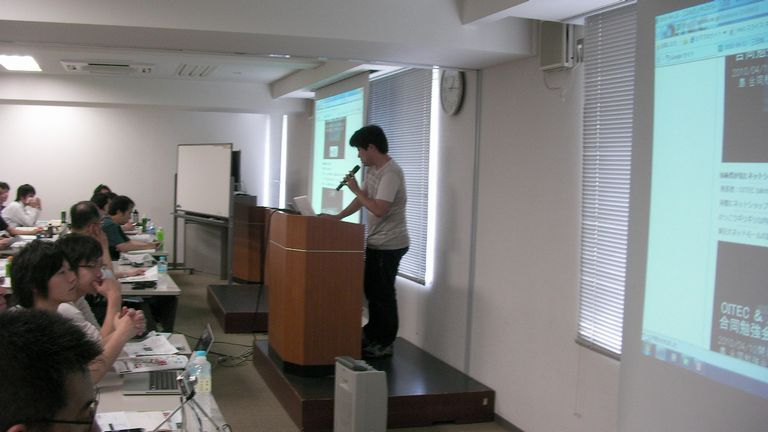
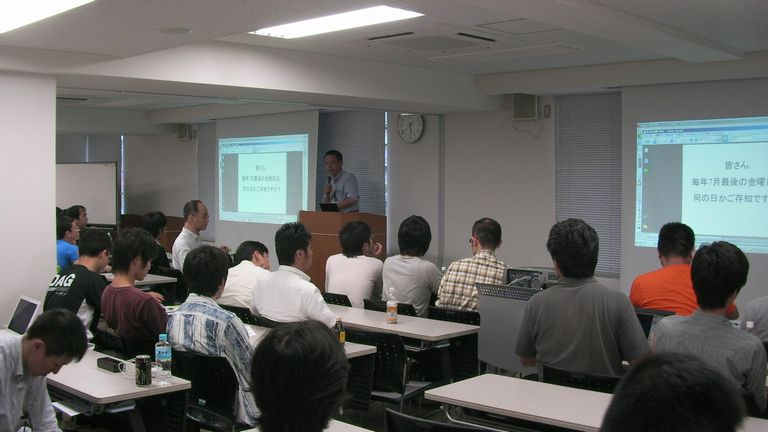
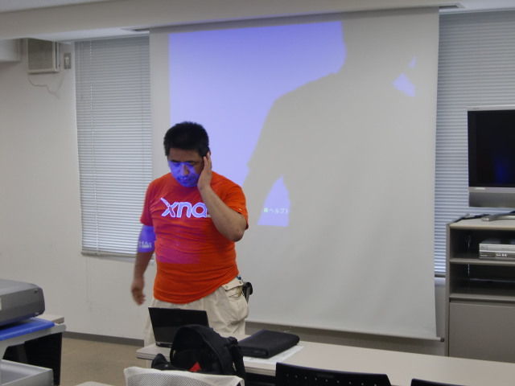
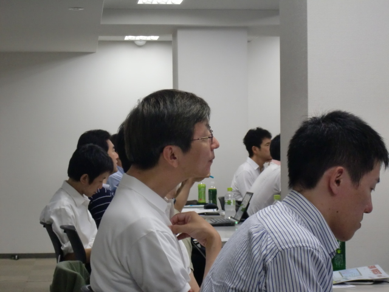
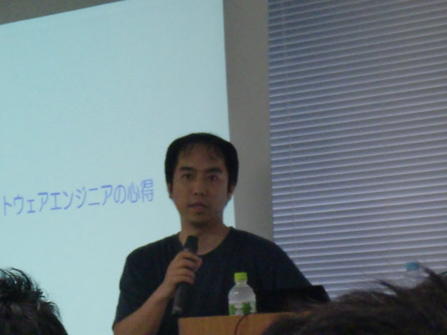
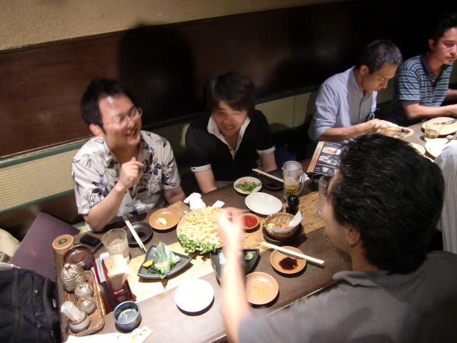

岡山オープンソース技術研究会 ／ 第9回 - オープンラボ岡山「柴田芳樹氏--ソフトウェアエンジニアの心得」
- 修了しました。
?参加申し込み方法
※満席（50席）になりました。キャンセル待ち受付を行っています。
http://atnd.org/events/4242
?開催風景
■前川さん
■きよくらさん

■芝さん
■柴田さん

■三輪さん

■懇親会
■いろいろ








?収支報告
<勉強会> [収入] 参加費 25,000 ------------------------- 収入合計：25,000 [支出] 会場費 6,500（プロジェクタ2台、マイク含む） 講師交通費 15,000 ------------------------- 支出合計：21,500 --------------------------------------- 収入合計ー支出合計：3,500 <懇親会> [収入] 懇親会費 45,000 ------------------------- 収入合計：45,000 [支出] 懇親会費 43,797 ------------------------- 支出合計：43,797 --------------------------------------- 収入合計ー支出合計：1,203 <合計> 前回繰り越し -11,837（ひらが負担） 勉強会 3,500 懇親会 1,203 --------------------------------------- 合計 -7,134
?詳細
オープンラボ岡山 オープンラボ岡山とは、岡山周辺の技術者のための勉強会プラットフォームとして、 勉強会や読書会の場を提供するための組織です。勉強会や読書会を開催したい方、 参加したい方が簡単に集まることの出来る場にしたいと考えています。運営委員は 全員ボランティアで、それぞれが勉強会や読書会の主催者でもあります。興味のあ る方は是非とも一緒にやりましょう。 ■名称： 第9回 オープンラボ岡山 ■参加申し込み方法 http://atnd.org/events/4242 ■参加費： 500円 ■開催日時： 2010年6月19日（土曜日） 13:00～18:00 ■開催場所： きらめきプラザ（２階の「ゆうあいセンター」研修室１） http://www.kirameki-plz.com/gaiyou.html ■主催: 岡山県立大学 （岡山県立大学アクティブキャンパス事業「岡山オープンソース技術研究会」） オープンラボ岡山 実行委員会 ■共催： 岡山Javaユーザ会( http://java.okaya.ma/ ) 瀬戸内Linuxユーザ会（ http://www.stlug.org/ ) LinuxKernelHackJAPAN( http://hira-consulting.com/wiki ) オープンセミナー＠岡山実行委員会( http://openseminar.okaya.ma/ ) 日本PostgreSQLユーザ会 中国支部( http://www.postgresql.jp/ ) ローカルネットワーク（http://www.localnetwork.jp/） ■懇親会（任意）： 居酒屋土間土間 4000円程度を予定 http://www.e-map.ne.jp/pc/index.htm?cid=domadoma&kid=0186102 ---------------------------------------------------------------------- 【タイトル】Blu-ray Javaで作ったTwitterクライアント 【発表時間】20分 【発表者名】芝さん（岡山県立大学） 【タイトル１】ソフトウェアエンジニアの心得 【発表時間】2時間半 【タイトル２】プログラミング言語Java教育を振り返って 【発表時間】1時間程度 【発表者名】柴田芳樹さん 【柴田さんの経歴】 1984年4月～1996年8月 富士ゼロックス株式会社 ・1988年11月～1991年4月 米国ゼロックス社駐在（El Segundo, CA） ・1991年5月～1993年5月 米国ゼロックス社駐在（Palo Alto, CA） 1996年9月～1997年4月 日本オラクル株式会社 1997年5月～1998年4 月 株式会社ジャストシステム 1998年5月～2009年8月 富士ゼロックス情報システム株式会社 ・2002年8月～2003年 1月 米国ゼロックス社駐在（Webster, NY） 2009年9月～2010年XX月（現在） 株式会社リコー 2010年XX 月～2019年11月（60歳） ??? 【著書】 『Java 2 Standard Edition 5.0 Tiger 拡張された言語仕様について』（2005年5月、ピアソン・エデュケーション） 『ソフトウェア開発の名著を読む』（2006年7月技術評論社） 『プログラマー現役続行』（2007年9月、技術評論社） 『ソフトウェア開発の名著を読む【第二版】』（2009年10月、技術評論社） 『プログラマー現役続行【第二版】』（2010年秋、技術評論社） 【翻訳書】 『Javaリアルタイム仕様』（2000年12月、ピアソン・エデュケーション） 『プログラミング言語Java 第3版』（2001年6月、ピアソン・エデュケーション） 『Effective Java プログラミング言語ガイド』（2001年11月、ピアソン・エデュケーション） 『Java Puzzlers 罠、落とし穴、コーナーケース』（2005年11月、ピアソン・エデュケーション） 『プログラミング言語Java 第4版』（2007年4月、ピアソン・エデュケーション） 『Google Web Toolkit ソリューション』（2008年8月、ピアソン・エデュケーション） 『Effective Java 第2版』（2008年11月、ピアソン・エデュケーション） 『徒弟制度パターン（仮題）』（2010年夏、オライリー） 『Elements of Programming』（2011年、ピアソン・エデュケーション）
Copyright(C)2009 オープンラボ岡山運営委員会 All rights reserved.